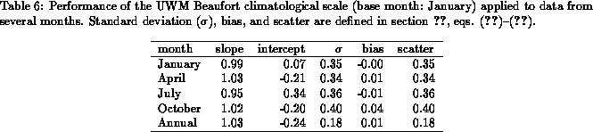
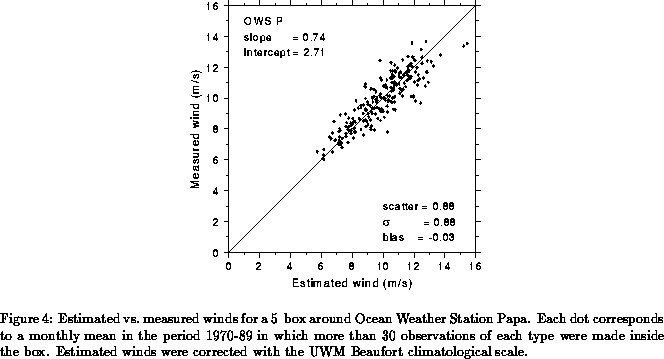
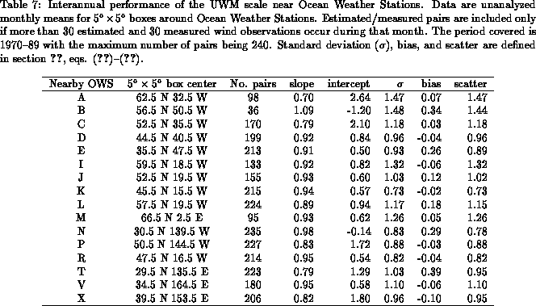
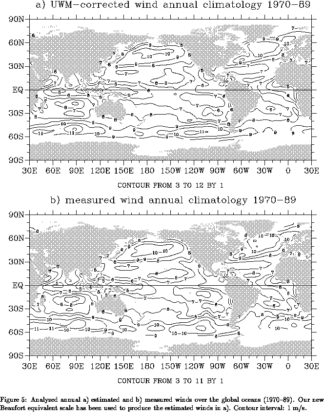
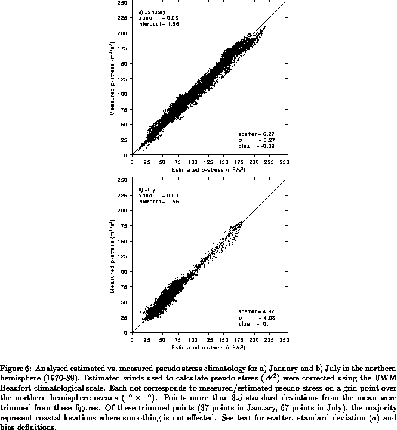

Table 6 summarizes the relationship between measured/estimated wind speed in COADS for different months when our correction is applied. As expected, the best performance is attained for January, the base month used to derive the scale. The slopes of the least squares fit lines are consistent throughout the year within 5%of 1.
Table 7 summarizes the performance of the UWM scale for 5 degree boxes around Ocean Weather Stations (OWS) in the North Pacific and North Atlantic oceans. For each month from 1970 to 1989, separate monthly mean wind speeds are computed for measured and estimated wind reports. These boxes are chosen to include OWS so that a great number of anemometer measured reports are present (although not all OWS were reporting the entire period). Monthly means with fewer than 30 observations for a particular month are eliminated. Note that no objective analysis is performed. As before, the WI flag in COADS CMR-5 was taken at face value, although H.-J. Isemer (personal communication) has brought to our attention apparent inconsistencies in this flag in the neighborhood of some OWS. A sensitivity test eliminating dubious WI reports has been conducted for some OWS and the main conclusions of this section are not affected by this tighter quality control. The most striking feature in Table 7 is the larger standard deviation (and scatter) compared to the climatological results presented in the previous sections. This increase in standard deviation is partially due to the absence of objective analysis, combined with the noisier character of monthly mean, regional data. In ten out of the 16 boxes near ocean weather stations that were studied, the measured/estimated wind pairs have slopes within 10%of 1. Biases are generally small, although a few boxes (OWS B, E, N, and T) have biases in excess of 0.25 m/s. As an illustration of the results for a box in which the UWM Beaufort scale has moderate performance, Fig. 4 depicts measured vs. estimated wind speeds for the box around OWS P.


Figure 5 shows the global distribution of annual mean measured and estimated winds. Most of the large scale patterns of measured/estimated winds match quite well, surprisingly even in the data sparse regions of the southern oceans.

Figure 6 shows the performance of the UWM Beaufort
climatological scale on pseudo stress.
Our correction produces a consistent estimate of pseudo wind stress
with a slope about 0.98 and small bias. However, there is a tendency to
underestimate annual mean pseudo wind stress above 175 m/s
.
